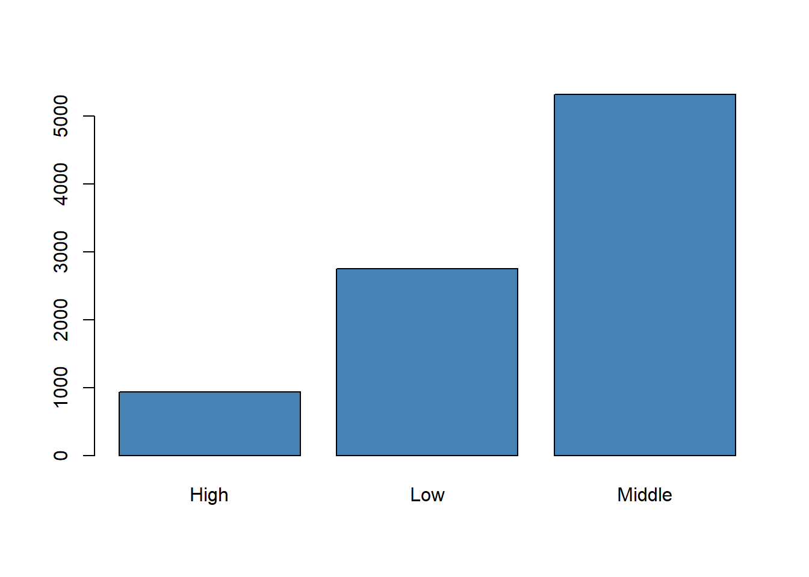
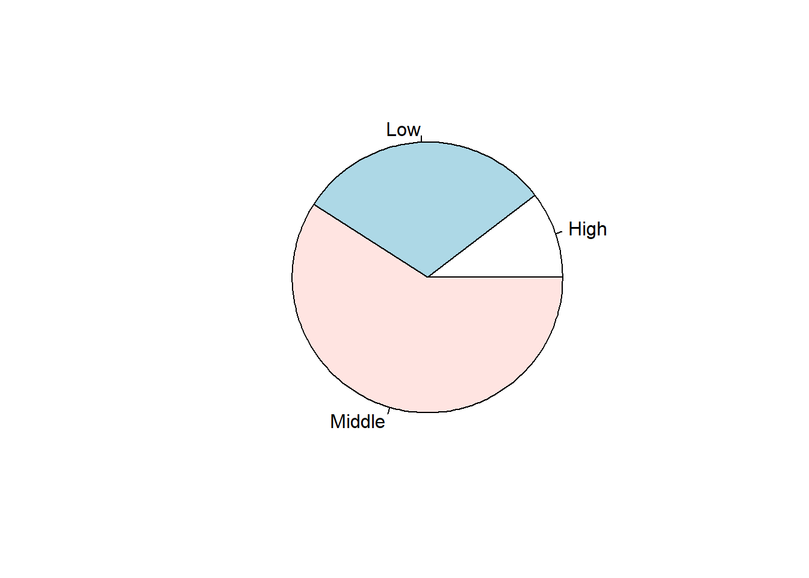
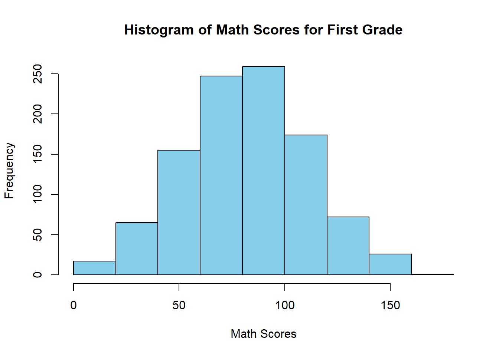
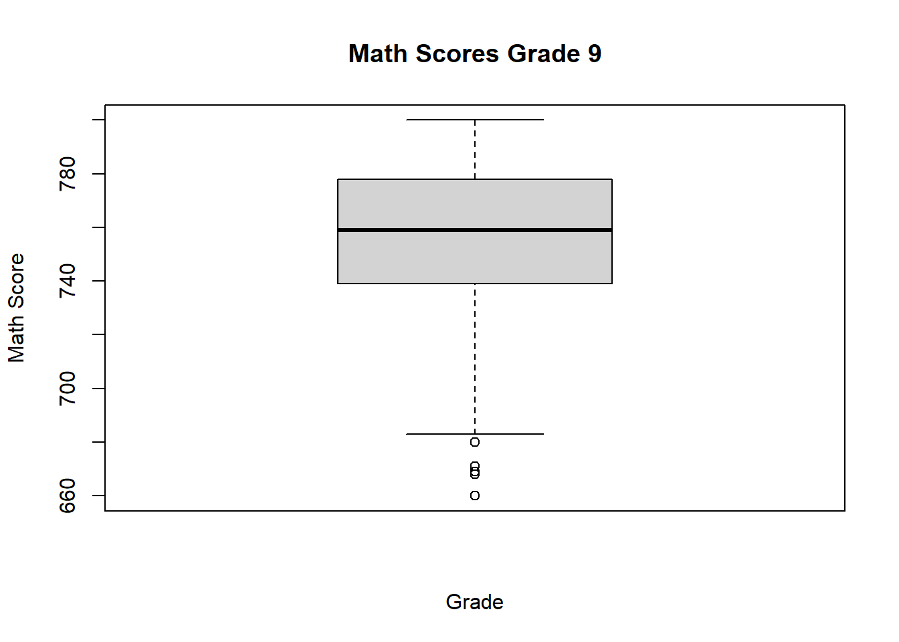
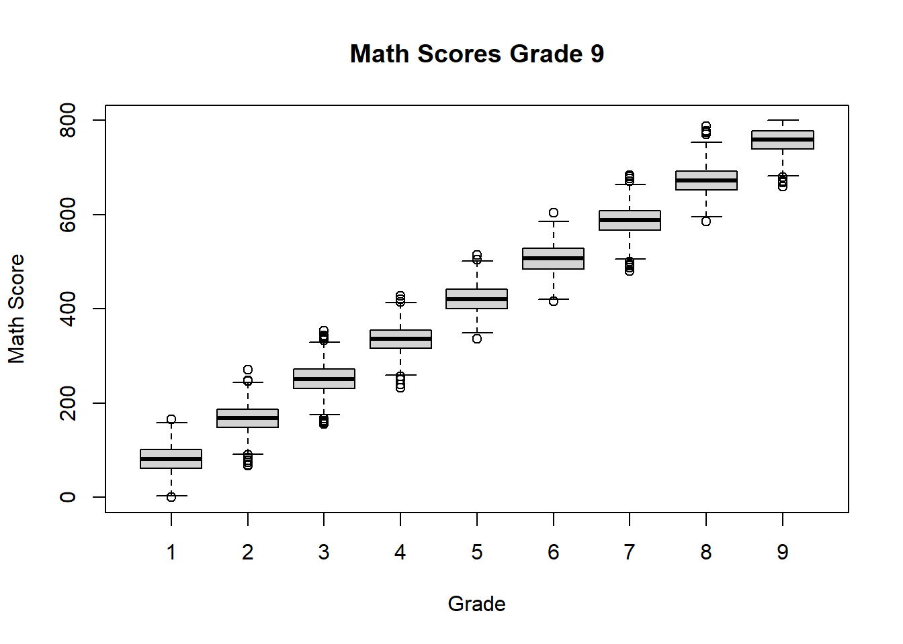
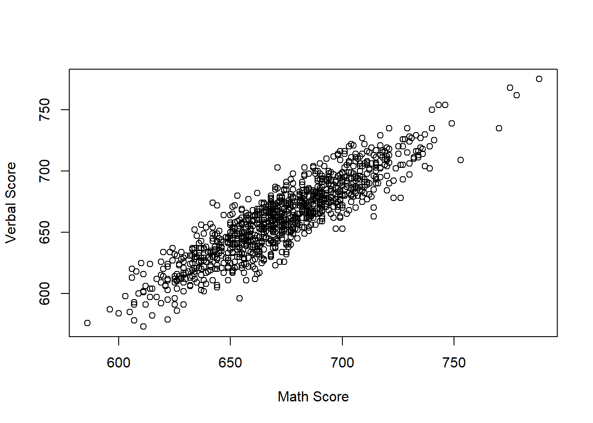

4 Data Description
In this section, we focus on how to organize, summarize, and describe data.
The goal of data description is to understand the main features of a data set before developing probability models or performing statistical inference.
We will use the simulated school data throughout this section.
Describing data is an essential first step in statistical analysis. Before building models or making formal inferences, we want to understand what the observed data look like, where the values tend to be concentrated, how much variability is present, and whether there are any unusual patterns that deserve attention.
4.1 Descriptive Statistics
Definition 4.1 (Descriptive Statistics) Descriptive statistics are methods used to organize, summarize, and describe the main features of a data set.
Descriptive statistics help us answer questions such as:
- What values are typical?
- How much variability is present?
- Are there unusual observations?
- How are values distributed?
At this stage, the goal is to describe the observed data, not to make conclusions beyond the data set.
Descriptive statistics include both graphical summaries, such as bar plots and histograms, and numerical summaries, such as the mean, median, and standard deviation. Each summary highlights a different aspect of the data, so in practice we often use several summaries together.
4.2 The Simulated School Data
For this section we will simulate a data set for student performance in math and verbal tests accross 10 schools. For each student we will include the following variables:
Variables:
- Student ID
- Student School
- Student Grade
- Student Age
- Income Level
- Education Level Parents
- Math Score
- Verbal Score
# Data Simulation
set.seed(2026)
# Simulation Parameters
numSch <- 10
namSch <- paste0("School ", 1:numSch)
numGra <- 9
numStuGra <- 100
numStu <- numSch * numGra * numStuGra
minScoMat <- 0
maxScoMat <- 800
minScoVer <- 0
maxScoVer <- 800
namIncLev <- c("Low", "Middle", "High")
namEduPar <- c("No Highschool", "Highschool", "College", "Graduate School")
# Student School
sch <- sample(namSch, size = numStu, replace = TRUE)
gra <- sample(1:numGra, size = numStu, replace = TRUE)
age <- round(gra + 5 + runif(n =numStu, min = -0.6, max = 0.6))
incLev <- sample(namIncLev, size = numStu, replace = TRUE, prob = c(0.3, 0.6, 0.1))
eduPar <- sample(namEduPar, size = numStu, replace = TRUE)
# Simulate Scores
matSco <- numeric(length = numStu)
verSco <- numeric(length = numStu)
numSel <- c()
for(i in 1:numSch){
# School Performance Level
schPer <- runif(n = 1, min = 0, max = 1)
# Selects School
selSch <- namSch[i] == sch
for(j in 1:length(namIncLev)){
# Income Performance
incPer <- j / length(namIncLev)
# Selects Income
selInc <- namIncLev[j] == incLev
for(k in 1:length(namEduPar)){
# Parent Education Performance
eduPer <- k / length(namEduPar)
# Selects Parent Education Level
selPar <- namEduPar[k] == eduPar
for(l in 1:numGra){
# Grade Level Performance
graPer <- l / length(numGra)
# Selects Grade Level
selGra <- l == gra
# Selected Students
sel <- selSch & selInc & selPar & selGra
numSel <- c(numSel, sum(sel))
numStuClu <- sum(sel)
matSco[sel] <- 0.2 * schPer + 0.1 * incPer + 0.1 * eduPer + 0.6 * graPer
matSco[sel] <- matSco[sel] + rnorm(n = numStuClu, mean = 0, sd = 0.2)
verSco[sel] <- 0.1 * schPer + 0.1 * incPer + 0.1 * eduPer + 0.7 * graPer
verSco[sel] <- matSco[sel] + rnorm(n = numStuClu, mean = 0, sd = 0.1)
}
}
}
}
# Transforms Scores to 0-800 Scale
matSco <- (matSco - min(matSco)) / (max(matSco) - min(matSco)) * 850
verSco <- (verSco - min(verSco)) / (max(verSco) - min(verSco)) * 850
matSco[matSco > 800] <- 800
verSco[verSco > 800] <- 800
matSco <- round(matSco)
verSco <- round(verSco)
# Creates a data frame
schDat <- as.data.frame(1:numStu)
schDat <- cbind(schDat, sch, gra, age, incLev, eduPar, matSco, verSco)
colnames(schDat) <- c("Student_ID", "School", "Grade", "Age", "Income_Level", "Parent_Education", "Math_Score", "Verbal_Score")
# Displays the First Rows of the Data Set
head(schDat)## Student_ID School Grade Age Income_Level Parent_Education Math_Score Verbal_Score
## 1 1 School 9 9 14 Low College 754 735
## 2 2 School 1 3 8 Middle College 251 263
## 3 3 School 6 3 8 Middle Graduate School 277 273
## 4 4 School 4 4 9 Middle Highschool 285 298
## 5 5 School 5 9 14 Low Highschool 776 762
## 6 6 School 10 1 6 Low No Highschool 57 52The code above simulates a student-level data set and stores it in the object schDat. It creates demographic variables such as school, grade, age, income level, and parent education, and then generates math and verbal scores that depend on school performance, income level, parent education, and grade level.
The command head(schDat) displays the first few rows of the data set. This is useful as an initial check that the variables were created correctly, that the data have the expected structure, and that each row corresponds to one student.
Each row of the data set represents one student, and each column represents a variable measured on that student.
4.3 Types of Variables
Before choosing a graph or a numerical summary, we need to determine the type of variable we are describing.
The type of variable matters because different kinds of variables require different summaries. For example, a bar plot is appropriate for a categorical variable, while a histogram is appropriate for a numerical variable.
4.3.1 Categorical Variables
Definition 4.2 (Categorical Variable) A categorical variable is a variable whose values represent categories or groups.
Examples from the simulated school data may include:
- school
- grade level
- income level
- parents education level
These variables classify students into groups rather than measuring a numerical amount.
## School Grade Income_Level Parent_Education
## 1 School 9 9 Low College
## 2 School 1 3 Middle College
## 3 School 6 3 Middle Graduate School
## 4 School 4 4 Middle Highschool
## 5 School 5 9 Low Highschool
## 6 School 10 1 Low No HighschoolThis code displays the first few observations for the categorical variables in the data set.
From this output, we can verify that these variables are recorded as labels or group memberships. For example, a student belongs to a particular school, income category, and parent education category.
4.3.2 Numerical Variables
Definition 4.3 (Numerical Variable) A numerical variable is a variable whose values are numerical measurements or counts.
Examples from the simulated school data may include:
- age
- math score
- verbal score
These variables measure a quantity for each student and can be meaningfully averaged or compared numerically.
## Age Math_Score Verbal_Score
## 1 14 754 735
## 2 8 251 263
## 3 8 277 273
## 4 9 285 298
## 5 14 776 762
## 6 6 57 52This code displays the first few observations for the numerical variables.
From this output, we see that these variables take numerical values, so they can be summarized using quantities such as the mean, median, variance, and standard deviation.
4.3.2.1 Discrete Variables
Definition 4.4 (Discrete Variable) A discrete variable is a numerical variable that takes countable values.
Examples may include:
- Age
- math score
- verbal score
In this data set, these variables are recorded as integers, so they behave as discrete variables.
## Age Math_Score Verbal_Score
## 1 14 754 735
## 2 8 251 263
## 3 8 277 273
## 4 9 285 298
## 5 14 776 762
## 6 6 57 52This code again shows examples of values for variables recorded in whole-number form.
The output illustrates that these variables take separated, countable values rather than every possible value in an interval.
4.3.2.2 Continuous Variables
Definition 4.5 (Continuous Variable) A continuous variable is a numerical variable that can take any value in an interval.
Examples may include:
- height of students
- weight of students
A continuous variable is measured on a scale where, at least conceptually, values between any two observed values are also possible. In this particular simulated data set, the main numerical variables were recorded as integers, but in many real data sets numerical variables such as height, weight, time, and distance are continuous.
4.4 Graphical Summaries
Graphs are useful because they allow us to quickly identify patterns in the data.
A good graph often reveals structure that may not be obvious from a table of raw numbers. In particular, graphs help us see the distribution of a variable, compare groups, and detect unusual observations.
4.4.1 Graphical Summaries for Categorical Variables
4.4.1.1 Bar Plots
A bar plot is useful for displaying the frequencies of categories.

This code first counts the number of students in each income level and then displays those counts in a bar plot.
The height of each bar represents the frequency of a category. In this example, the graph shows how the students are distributed across the low, middle, and high income levels. We expect the middle-income category to appear most often because the data were simulated with a larger probability for that group.
A bar plot helps us compare how often each category appears.
4.4.1.2 Pie Charts
Pie charts may also be used for categorical variables, although bar plots are usually easier to interpret.

This code shows the same income-level frequencies using a pie chart.
The pie chart emphasizes proportions of the whole rather than direct comparisons of counts. It provides a visual impression of how much of the sample belongs to each income category, although the exact comparison between groups is often clearer in a bar plot.
4.4.2 Graphical Summaries for Numerical Variables
4.4.2.1 Histograms
Definition 4.6 (Histogram) A histogram is a graph that displays the distribution of a numerical variable by grouping values into intervals.
hist(schDat$Math_Score[schDat$Grade == 1], col="skyblue", main = "Histogram of Math Scores for First Grade", xlab = "Math Scores")
This code selects the math scores for first-grade students and groups them into intervals to produce a histogram.
The histogram shows how first-grade math scores are distributed. It helps us see where scores are concentrated, how spread out they are, and whether the distribution is approximately symmetric or skewed. In this setting, the histogram also gives us a first idea of the range of performance among first-grade students.
A histogram helps us see where values are concentrated and whether the data are symmetric, skewed, or have unusual observations.
4.4.2.2 Boxplots
Definition 4.7 (Boxplot) A boxplot is a graphical summary based on the median, quartiles, and potential outliers.
boxplot(schDat$Math_Score[schDat$Grade == 9],
main = "Math Scores Grade 9",
xlab = "Grade",
ylab = "Math Score")
This code produces a boxplot for the math scores of ninth-grade students.
The boxplot summarizes the center and spread of the grade 9 math scores using the median and quartiles. It also highlights possible outliers. Compared with a histogram, the boxplot provides a more compact summary and is especially useful when we want to compare several groups side by side.
A boxplot is especially useful for identifying outliers and comparing distributions across groups.
4.4.3 Comparing Numerical Variables Across Groups
A common goal is to compare a numerical variable across levels of a categorical variable.
For example, we may want to compare:
- scores by income level
- scores by school
- scores by grade level
Grouped comparisons help us determine whether the distribution of a numerical variable changes from one category to another.
boxplot(Math_Score ~ schDat$Grade,
data = schDat,
main = "Math Scores Grade 9",
xlab = "Grade",
ylab = "Math Score")
This code creates a separate boxplot of math scores for each grade.
The resulting display allows us to compare medians, spread, and possible outliers across grade levels. Since the simulated scores were constructed to increase with grade, we expect the typical math score to rise as grade increases. This kind of plot is very helpful for identifying systematic differences between groups.
These comparisons help us describe how the distribution changes from one group to another.
4.5 Distribution of a Numerical Variable
Definition 4.8 (Distribution) The distribution of a variable describes how the values of the variable are spread across possible values.
When describing the distribution of a numerical variable, we focus on four main features:
- center
- spread
- shape
- outliers
A complete description of a numerical variable usually includes all four features. Looking at only one of them can give an incomplete picture of the data.
4.5.1 Center
The center of a distribution describes a typical value.
Two common measures of center are the mean and the median.
The center tells us where the bulk of the observations are located. When the distribution is roughly symmetric, the mean and median are often close. When the distribution is skewed or contains outliers, they may differ noticeably.
4.5.2 Spread
The spread of a distribution describes how much the values vary.
Variables with larger spread show greater variability.
Two data sets can have similar centers but very different spreads. A small spread means the observations are clustered closely together, while a large spread means they are more dispersed.
4.5.3 Shape
The shape of a distribution describes the overall pattern of values.
A distribution may be:
- approximately symmetric
- skewed to the right
- skewed to the left
The shape helps us understand whether observations are balanced around the center or whether one tail of the distribution extends farther than the other. Histograms and boxplots are especially useful for assessing shape.
Use your existing histogram examples to illustrate these ideas.
4.5.4 Outliers
Outliers are observations that are much smaller or much larger than the rest of the data.
They should be examined carefully because they may represent:
- unusual but valid observations
- data entry errors
- special cases that deserve further attention
An outlier can have a strong effect on some summaries, especially the mean and the standard deviation. For that reason, outliers should be identified and interpreted rather than ignored.
4.6 Numerical Summaries
Graphs are useful, but we often also want numerical summaries.
Numerical summaries provide a compact description of a data set. They are especially useful when we need to report key features of the data in a table or compare several groups using a few numbers.
4.6.1 Measures of Center
4.6.1.1 Mean
Definition 4.9 (Mean) The mean is the average of a set of numerical values.
If the observed values are \(y_1, y_2, \ldots, y_n\), the mean is
\[ \bar{y} = \frac{1}{n}\sum_{i=1}^n y_i. \]
Use your existing code to compute the mean for a numerical variable from the simulated school data.
## [1] 81.79429This code computes the average math score for first-grade students.
The result gives the arithmetic mean of the first-grade math scores and serves as a measure of the center of that distribution. Because the mean uses all observations, it summarizes the full data set but can be pulled upward or downward by extreme values.
The mean uses all observations, so it can be affected by extreme values.
4.6.1.2 Median
Definition 4.10 (Median) The median is the middle value when the observations are arranged in order.
## [1] 82This code computes the median math score for first-grade students.
The median gives the middle score after ordering the observations. About half of the students have scores below the median and about half have scores above it. Comparing the mean and median can also provide information about skewness.
The median is less sensitive to extreme values than the mean.
4.6.2 Measures of Spread
4.6.2.1 Range
Definition 4.11 (Range) The range is the difference between the largest and smallest observations.
## [1] 0 165This code returns the minimum and maximum math scores for first-grade students.
From these two values, we can see the overall span of the observed scores. The range gives a quick idea of spread, but since it depends only on the most extreme observations, it can be strongly affected by outliers.
The range is simple to compute, but it depends only on the two most extreme observations.
4.6.2.2 Variance
Definition 4.12 (Sample Variance) The sample variance measures the average squared distance of the observations from their sample mean.
Given observations \(y_1, y_2, \ldots, y_n\), the sample variance is defined as
\[ s^2 = \frac{1}{n - 1} \sum_{i=1}^n (y_i - \bar{y})^2, \]
where \(\bar{y}\) is the sample mean.
## [1] 860.9301This code computes the variance of first-grade math scores.
A larger variance indicates that the scores tend to lie farther from their mean, while a smaller variance indicates that the scores are more concentrated around the mean. Because variance is expressed in squared units, it is usually interpreted together with the standard deviation.
Variance is measured in squared units, so it is often harder to interpret directly.
4.6.2.3 Standard Deviation
Definition 4.13 (Standard Deviation) The standard deviation is the square root of the variance.
## [1] 29.34161This code computes the standard deviation of first-grade math scores.
The standard deviation describes the typical distance of the scores from the mean, measured in the original units of the variable. This makes it easier to interpret than the variance. A larger standard deviation means more variability in student performance.
The standard deviation is easier to interpret than the variance because it is in the same units as the original data.
4.6.2.4 Quartiles and Interquartile Range
Definition 4.14 (Quartiles) Quartiles divide the ordered data into four parts.
Definition 4.15 (Interquartile Range) The interquartile range is the difference between the third quartile and the first quartile.
Use your existing code to compute quartiles and the interquartile range.
# Interquartile Range of math score for first Graders
qua <- quantile(schDat$Math_Score[schDat$Grade == 1], c(0.25, 0.75))
print(paste0("The interquartile range of Math scores for first graders is: ",qua[2] - qua[1]))## [1] "The interquartile range of Math scores for first graders is: 40"This code computes the first and third quartiles and then subtracts them to obtain the interquartile range.
The interquartile range measures the spread of the middle 50% of the data. Because it ignores the most extreme observations, it is less sensitive to outliers than the full range and often provides a more stable summary of variability.
The interquartile range describes the spread of the middle 50% of the data.
4.6.3 Five-Number Summary
Definition 4.16 (Five-Number Summary) The five-number summary consists of the minimum, first quartile, median, third quartile, and maximum.
Use your existing code to obtain the five-number summary.
## Min. 1st Qu. Median Mean 3rd Qu. Max.
## 0.00 62.00 82.00 81.79 102.00 165.00This code returns a compact summary of the first-grade math scores.
The output reports the minimum, first quartile, median, mean, third quartile, and maximum. The five-number summary is especially useful because it provides information about both center and spread and forms the basis for constructing a boxplot.
The five-number summary gives a compact description of the distribution and is the basis for the boxplot.
4.7 Outliers and the Boxplot Rule
Definition 4.17 (Outlier) An outlier is an observation that lies far from the rest of the data.
A common rule labels an observation as an outlier if it is:
- below \(Q_1 - 1.5 \times IQR\), or
- above \(Q_3 + 1.5 \times IQR\)
This rule is commonly used in boxplots to flag observations that are unusually far from the middle 50% of the data.
Use your existing code if you already compute or identify outliers.
boxplot(Math_Score ~ Grade,
data = schDat,
main = "Math Scores by Grade",
xlab = "Grade",
ylab = "Math Score")This grouped boxplot applies the boxplot rule separately to each grade.
The display allows us to compare distributions across grades while also identifying possible outliers in each group. If any points appear beyond the whiskers, those observations are flagged as unusual relative to the rest of the scores for that grade.
Outliers should not be removed automatically. They should first be investigated.
4.8 Describing More Than One Variable
So far, we have described one variable at a time.
In many studies, we are interested in relationships between variables.
For example, in the simulated school data, we may want to study the relationship between:
- grade and exam score
- age and exam score
When two or more variables are considered together, the goal is no longer only to describe each variable separately, but also to understand how they move together.
4.8.1 Scatterplots
A scatterplot is useful for displaying the relationship between two numerical variables.
plot(schDat$Math_Score[schDat$Grade == 8], schDat$Verbal_Score[schDat$Grade == 8], xlab = "Math Score", ylab = "Verbal Score")
This code plots math score against verbal score for eighth-grade students.
Each point represents one student. If the points tend to rise from left to right, that suggests a positive relationship: students with higher math scores also tend to have higher verbal scores. If no pattern is visible, the association is weak or absent.
A scatterplot helps us see whether two variables tend to increase together, decrease together, or show no clear relationship.
4.8.2 Correlation
Definition 4.18 (Correlation) Correlation is a numerical measure of the strength and direction of a linear relationship between two numerical variables.
## [1] 0.899065This code computes the correlation between math and verbal scores for eighth-grade students.
A positive correlation indicates that higher values of one variable tend to be associated with higher values of the other. A value close to 1 indicates a strong positive linear relationship, a value close to -1 indicates a strong negative linear relationship, and a value near 0 indicates little or no linear relationship.
Correlation describes association, but it does not imply causation.
4.9 Summary
Descriptive statistics allow us to summarize and understand a data set.
In this section, we introduced:
- types of variables
- graphical summaries
- numerical summaries
- ways to describe the distribution of a variable
- basic methods for describing relationships between variables
The main purpose of these tools is to help us understand the data before moving to probability models or inferential procedures. In practice, a good description of the data combines both graphs and numerical summaries, since each contributes different information.
Each graph or numerical summary should add useful information and should not simply repeat what has already been shown.